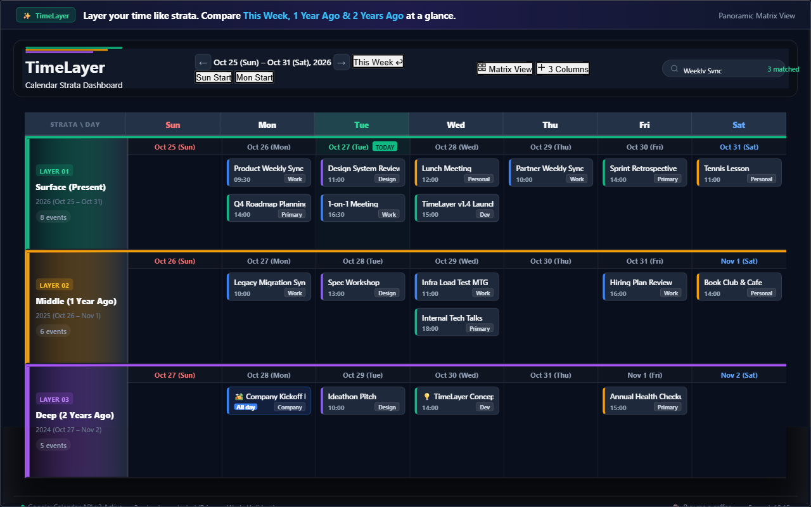

Chrome サイドパネル Chrome Side Panel
ツールバーのアイコンからワンクリックで起動。現在のタブやブラウジングを妨げずに、常に横で過去と同じ週の予定を参照できます。 An always-accessible side panel that keeps your browsing uninterrupted—ideal for quick historical comparisons while working.
今週・1年前の同週・2年前の同週の Google カレンダーの予定をひとつの画面に重ねて比較。「去年の今頃なにをしてた？」を過去へ遡る手間なく瞬時に振り返れます。 Overlay and compare your Google Calendar schedules seamlessly across This Week, 1 Year Ago, and 2 Years Ago—all inside one unified multi-layered workspace.

Compare 7 days horizontally across all 3 temporal strata vertically, with per-layer date headers and multi-day event banners.
Matrix View • v1.4.0日常のブラウジング中のちょっとした確認から、週次のじっくりとした振り返り・計画立てまでシームレスに対応します。 From quick side-panel lookups while browsing to full-screen weekly planning and multi-year comparisons.
ツールバーのアイコンからワンクリックで起動。現在のタブやブラウジングを妨げずに、常に横で過去と同じ週の予定を参照できます。 An always-accessible side panel that keeps your browsing uninterrupted—ideal for quick historical comparisons while working.
「マトリクスビュー」と「3列同期カラムビュー」の2モードを搭載。v1.4 ではすべての地層に日付ヘッダーを追加し、年の違いによる日付ズレも一目で比較可能になりました。 Switch between horizontal Matrix View (now with centered per-layer date headers in v1.4) and row-aligned 3-Column View with synchronized scrolling.
calendar.google.com の画面右下に専用ランチャーが常駐。クリックするだけで、ページを離れずにスライドインドロワーを展開できます。 A floating launcher button sits in the bottom-right corner of calendar.google.com, opening a slide-in TimeLayer drawer with one click.
キーワードを入力するだけで、現在・1年前・2年前のすべての予定（連休や出張の複数日バナーを含む）を横断検索して即座にハイライトします。 Filter and highlight events—including multi-day event banners—by title, location, or calendar across all three years simultaneously.
日曜始まり／月曜始まりをワンクリックで切り替え可能。複数カレンダーの選択や週移動、テーマ変更も開いている全画面間でリアルタイムに連動します。 Switch between Sunday-start and Monday-start weeks in one click. Selected calendars, theme, and sign-in state stay synced across open views.
OS のダーク／ライトモードに自動連動しつつ手動切替にも対応。v1.4 からは Chrome の表示言語に応じて日本語／英語 UI が自動で切り替わります。 Follows your OS appearance with one-click switching. Starting in v1.4, UI copy and date formatting automatically adapt to English and Japanese browsers.